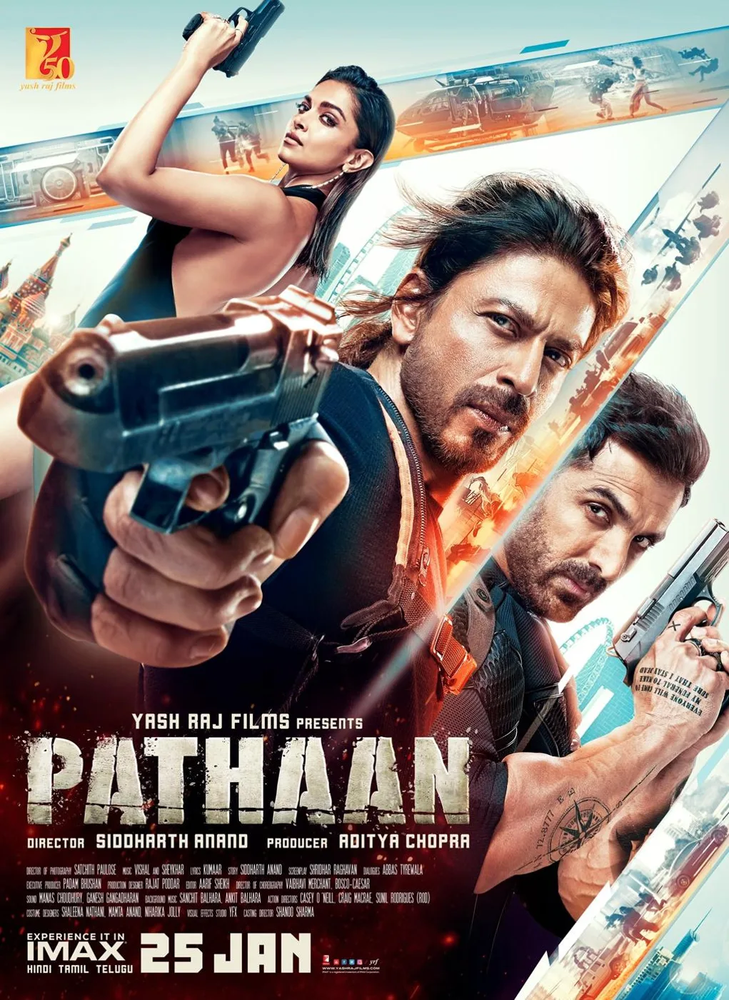
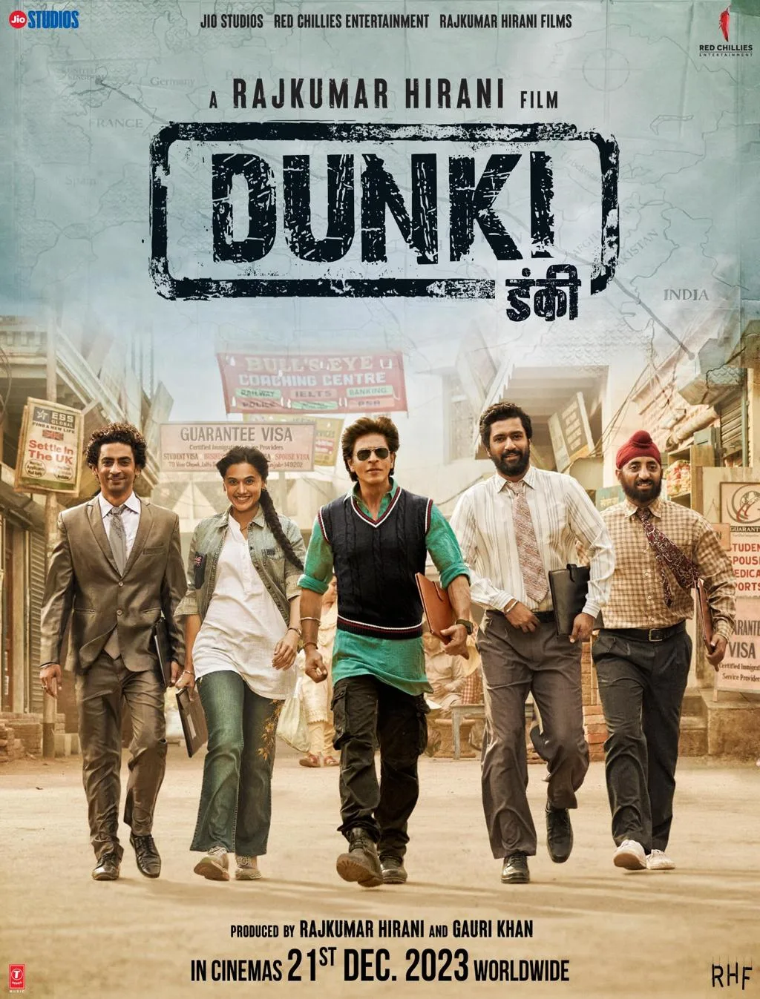
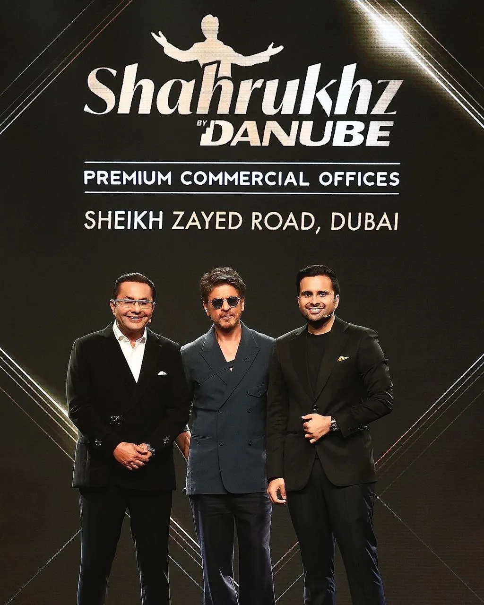
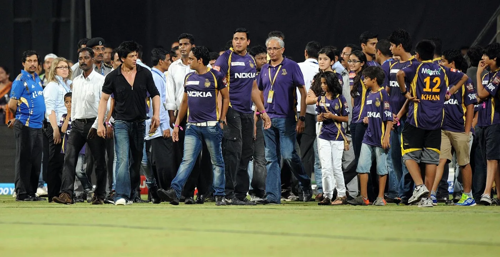
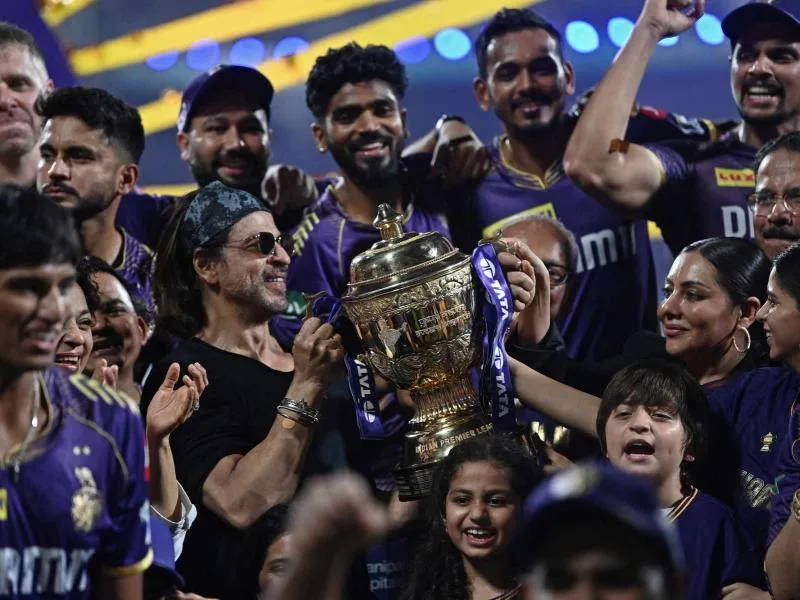
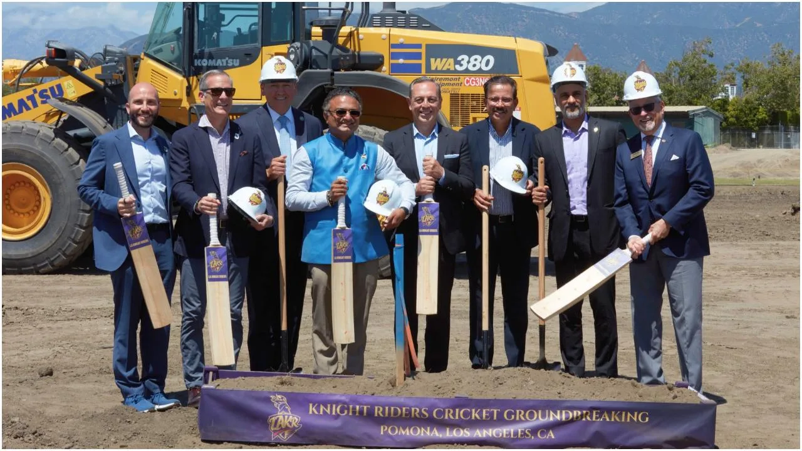
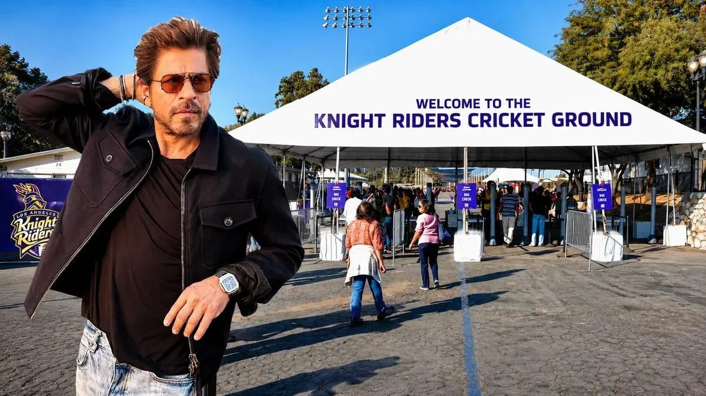
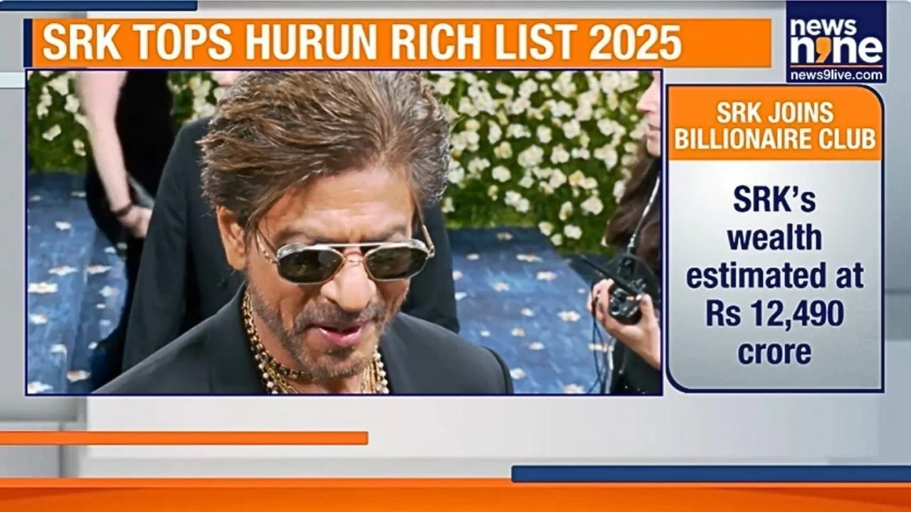
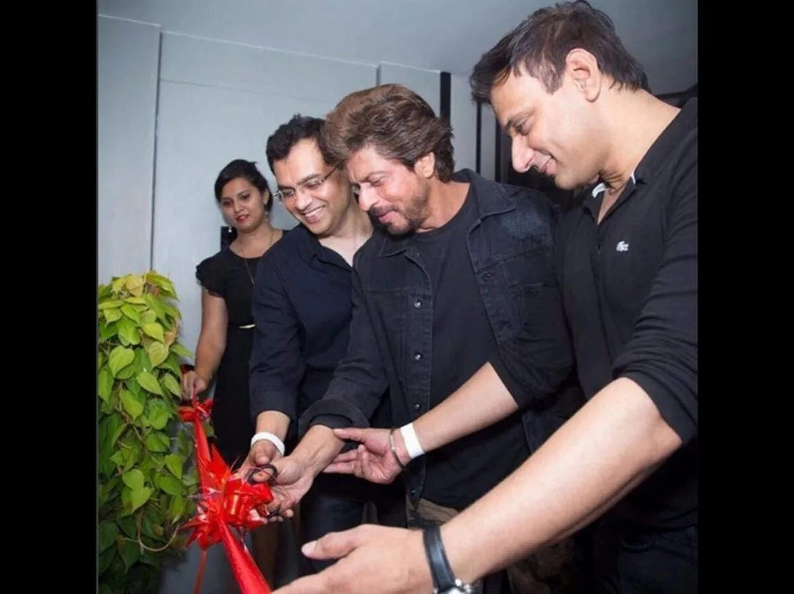

The Final Thesis · section 12 of 92
ACT IV — THE RESURRECTION
13. Pathaan, Jawan, Dunki: the box-office comeback becomes a brand comeback



5
The scale of the 2023 return is not merely a film-marketing story. It is a multi-sector commercial story.
The three films generated a reported combined worldwide box-office total of more than ₹2,600 crore by January 2024, according to trade and entertainment reporting.

Bollywood Hungama
The film releases also coincided with a rapid expansion in his endorsement portfolio. A January 2024 report noted more than ten new brand deals since January 2023 and cited TAM Media Research data showing that Khan appeared in 21 brand campaigns on television between January and July 2023.
Bollywood Hungama
The comeback effect
Films released in 2023
3
Reported combined global box office
₹2,600 crore+
TV brand campaigns, Jan–Jul 2023
21
Reported historical figures; box-office totals and brand-count methodologies vary by source.
The important shift is that Khan's commercial value was no longer being measured only through film releases. It was being reinforced through film production, endorsements, sports ownership, international events, and a growing portfolio of businesses.
The following developments extend that story beyond the three films.
14. Dubai: the star as a global real-estate marketing force

5
Dubai is an important part of the global brand story.
Khan has been associated with Dubai Tourism's "Be My Guest" campaign and with real-estate promotional projects. In 2014, The National reported his involvement in the Royal Estates development launch and discussed how celebrity endorsements were being used by Dubai developers to attract South Asian buyers.
The National
+1
In 2025, he was appointed brand ambassador for Gurugram-based Elan Group, adding another property-sector association to his endorsement portfolio.
Real Estate News
There is a compelling marketing phenomenon here: a star's persona can become a bridge between a developer, a destination, an investment proposition, and an international audience.
However, I could not substantiate the more specific claim that he simultaneously endorsed every competing major Dubai property developer or that this was a formally recognised world record. That claim would require a verified list of developers, campaign dates, and the contractual nature of each endorsement.
The verified record still supports a significant global property-marketing presence, but the "all competing companies" and "world record" language should remain a question for further investigation rather than a factual headline.
15. Cricket: from the Wankhede ban to the Knight Riders' American expansion



6
This is one of the strongest long-arc stories in the larger narrative—but the institutional details matter.
The Wankhede incident
In May 2012, the Mumbai Cricket Association imposed a five-year ban on Khan's entry to Wankhede Stadium following a heated altercation after an IPL match between Kolkata Knight Riders and Mumbai Indians.
The association and security personnel gave their account of the incident. Khan said he had reacted after security guards manhandled children accompanying him, including his daughter.
ICC
+1
The ban was imposed by the Mumbai Cricket Association (MCA), not by the BCCI. The MCA lifted it in August 2015, before the five-year period had fully elapsed.
India Today
+1
This is the accurate version of the institutional story: a dispute with the stadium's governing association, a five-year ban, and its subsequent lifting.
The Los Angeles expansion


5
The Knight Riders story has since expanded into the United States.
In April 2026, Los Angeles Knight Riders and Fairplex announced the groundbreaking of the Knight Riders Cricket Ground in Pomona, California. Khan participated through a special video message as co-owner of Knight Riders Sports.
lakriders.us
The venue was officially unveiled on July 2, 2026, according to Major League Cricket's announcement. The ground is intended to serve as the home venue of the Los Angeles Knight Riders and support the development of cricket infrastructure in Southern California ahead of the 2028 Olympics.
mlct20.com
That is a documented development from IPL franchise ownership into a physical sports-infrastructure project in the American market.
It also creates a fascinating contrast with the earlier Wankhede dispute: the public record now shows the Knight Riders organisation developing its own long-term cricket infrastructure in a new market. That is a business evolution, not evidence of a private revenge motive.
16. The wealth, endorsements, and corporate expansion
The financial and brand developments add another dimension to the resurrection narrative.

Hurun India Rich List
Documented estimate
Khan's estimated wealth was listed at ₹7,300 crore in the 2024 Hurun India Rich List, and ₹12,490 crore in the 2025 list. These are third-party wealth estimates, not audited financial statements.
India Today
+1
Brand portfolio
Documented expansion
Following the 2023 films, reports recorded a substantial expansion of his endorsements, spanning consumer products, technology, retail, lifestyle, and other categories.
Bollywood Hungama
+1

Red Chillies and Knight Riders
The resurgence sits alongside his existing production, VFX, and sports businesses. It is a diversified commercial portfolio, rather than a story about film acting alone.
As of the September 2026 reporting available for this study, the Hurun India Rich List 2026 estimates his wealth at ₹10,000 crore, down from its 2025 estimate of ₹12,490 crore. The same report still lists him as India's richest actor.
India Today
The estimates should not be read as a precise measurement of cash, personal income, or liquid assets. They reflect a third-party valuation methodology and can change from year to year.
The professional takeaway is that the "resurrection" is supported by observable changes across film performance, brand partnerships, sports, business holdings, and public wealth estimates. It is not necessary to infer a personal revenge plan to establish the scale of that commercial return.